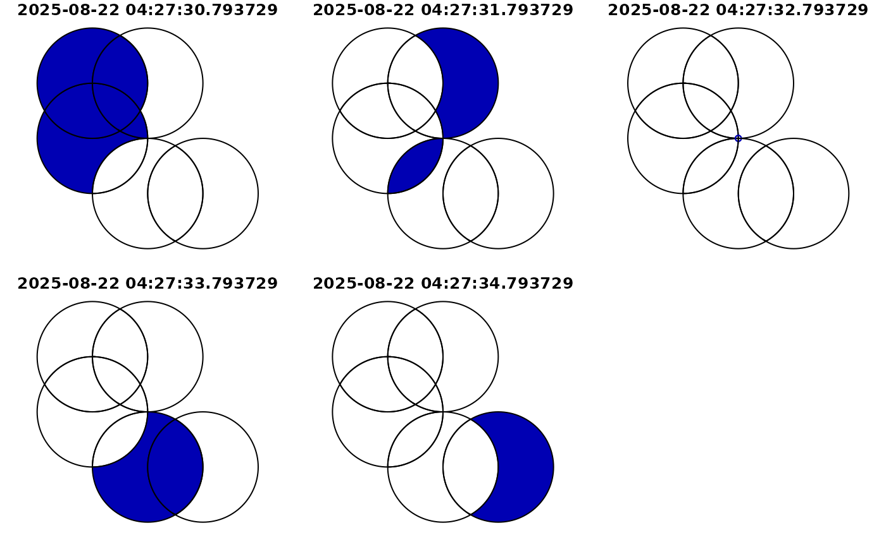
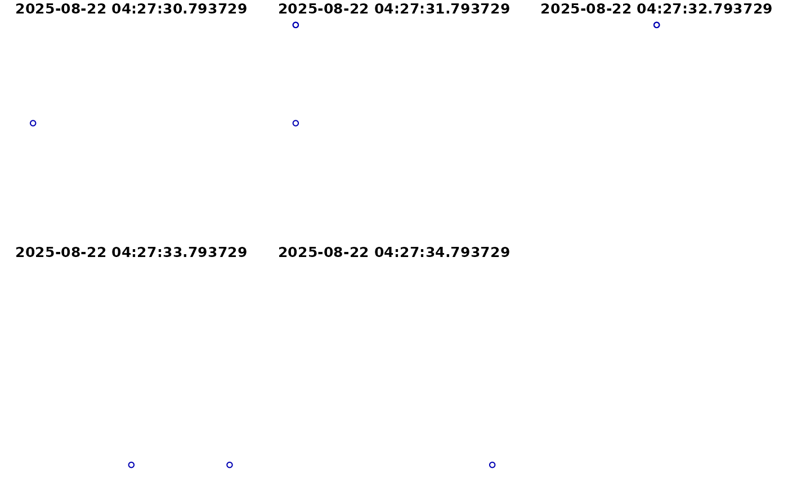
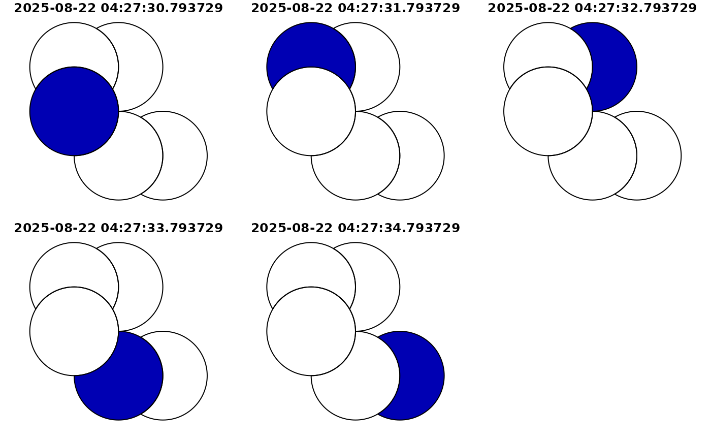
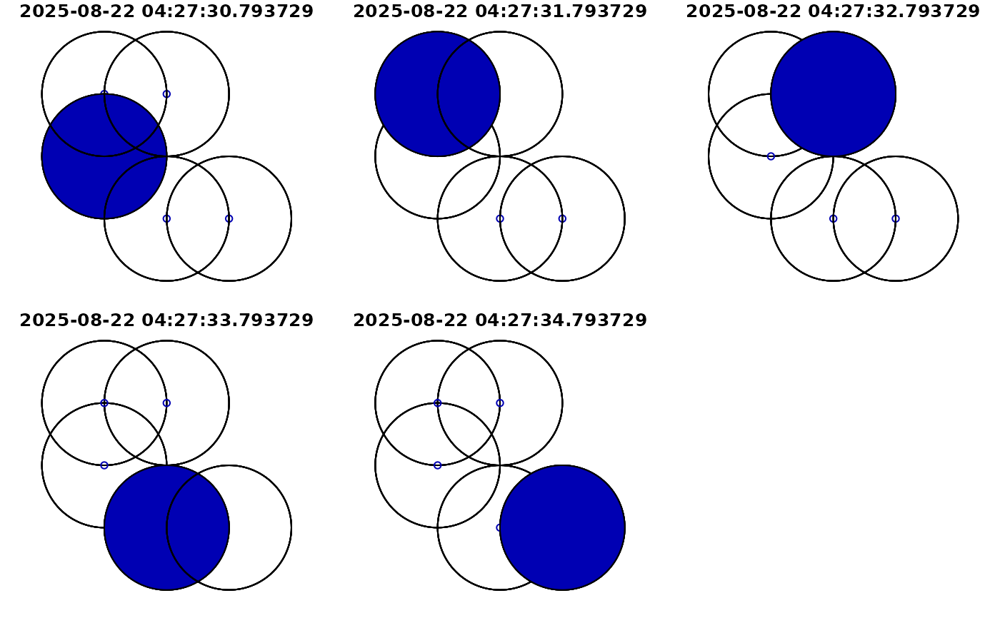
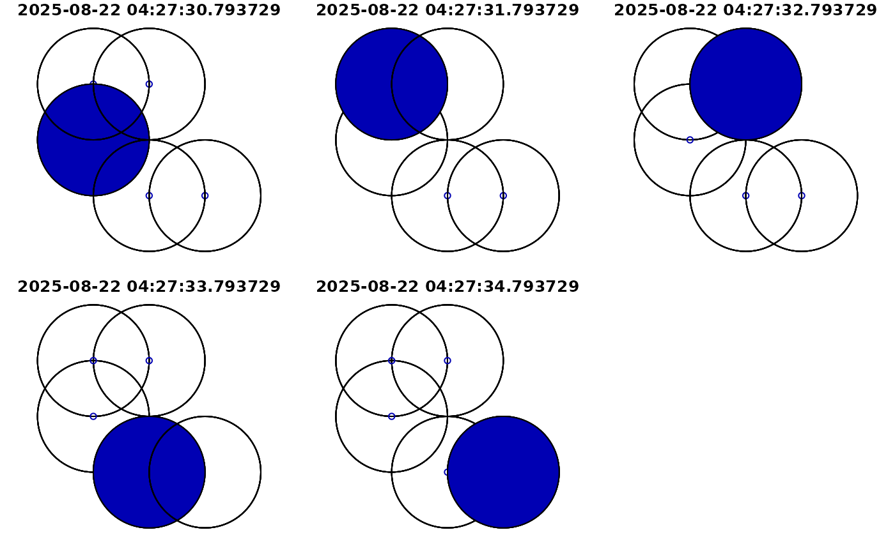

Geometric operations on pairs of simple feature geometry sets (including sftime objects)
Source: R/geom-transformers.R
geos_binary_ops.RdGeometric operations on pairs of simple feature geometry sets (including sftime objects)
Intersection
Difference
Usage
# S3 method for class 'sftime'
st_intersection(x, y, ...)
# S3 method for class 'sftime'
st_difference(x, y, ...)
# S3 method for class 'sftime'
st_sym_difference(x, y, ...)Arguments
- x
object of class
sftime,sf,sfcorsfg.- y
object of class
sftime,sf,sfcorsfg.- ...
See
geos_binary_ops.
Value
The intersection, difference or symmetric difference between two sets
of geometries.
The returned object has the same class as that of the first argument
(x) with the non-empty geometries resulting from applying the
operation to all geometry pairs in x and y. In case x
is of class sf or sftime, the matching attributes of the
original object(s) are added. The sfc geometry list-column returned
carries an attribute idx, which is an n-by-2 matrix with every
row the index of the corresponding entries of x and y,
respectively.
Details
st_intersection: When called with a missing y, the
sftime method for st_intersection returns an sftime
object with attributes taken from the contributing feature with lowest index;
two fields are added:
n.overlapsThe number of overlapping features in
x.originsA list-column with indexes of all overlapping features.
st_difference: When st_difference is called with a
single argument, overlapping areas are erased from geometries that are
indexed at greater numbers in the argument to x; geometries that are
empty or contained fully inside geometries with higher priority are removed
entirely.
Examples
g <- st_sfc(st_point(c(1, 2)), st_point(c(1, 3)), st_point(c(2, 3)),
st_point(c(2, 1)), st_point(c(3, 1)))
tc <- Sys.time() + 1:5
x1 <- st_sftime(a = 1:5, g, time = tc)
x2 <- st_buffer(x1, dist = 1)
## intersection
# only x provided (no y)
plot(st_intersection(x2))
#> [INFO] Fewer time stamps in the data than asked for; argument 'number' set to: 5

#> NULL
# with arguments x and y provided
plot(st_intersection(x2, x1))
#> Warning: attribute variables are assumed to be spatially constant throughout all geometries
#> [INFO] Fewer time stamps in the data than asked for; argument 'number' set to: 5

#> NULL
## difference
# only x provided (no y)
plot(st_difference(x2))
#> [INFO] Fewer time stamps in the data than asked for; argument 'number' set to: 5

#> NULL
# with arguments x and y provided
plot(st_difference(x2, x1))
#> Warning: attribute variables are assumed to be spatially constant throughout all geometries
#> [INFO] Fewer time stamps in the data than asked for; argument 'number' set to: 5
 #> NULL
## symmetric difference
plot(st_sym_difference(x1, x2))
#> Warning: attribute variables are assumed to be spatially constant throughout all geometries
#> [INFO] Fewer time stamps in the data than asked for; argument 'number' set to: 5

#> NULL
#> NULL
## symmetric difference
plot(st_sym_difference(x1, x2))
#> Warning: attribute variables are assumed to be spatially constant throughout all geometries
#> [INFO] Fewer time stamps in the data than asked for; argument 'number' set to: 5

#> NULL